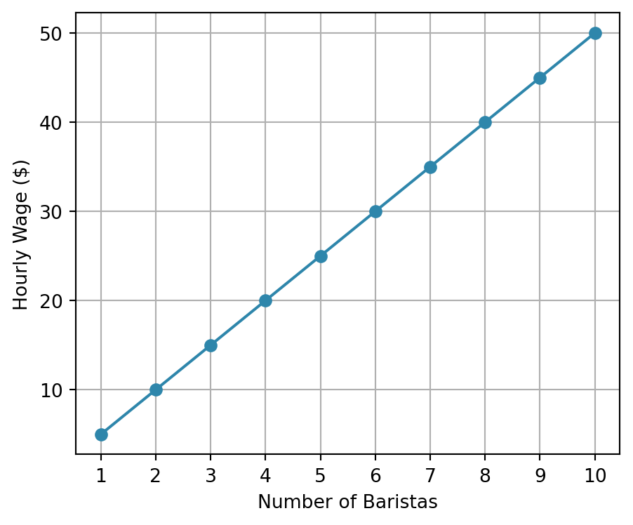
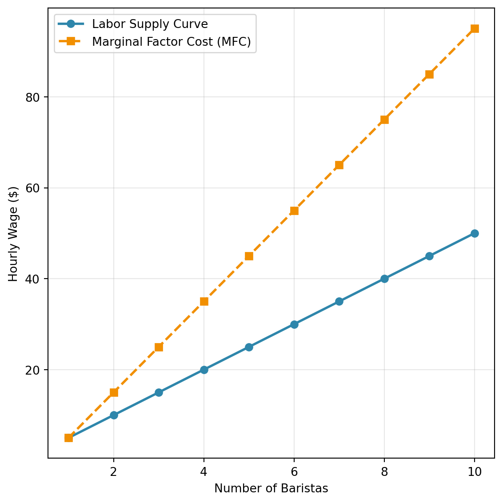
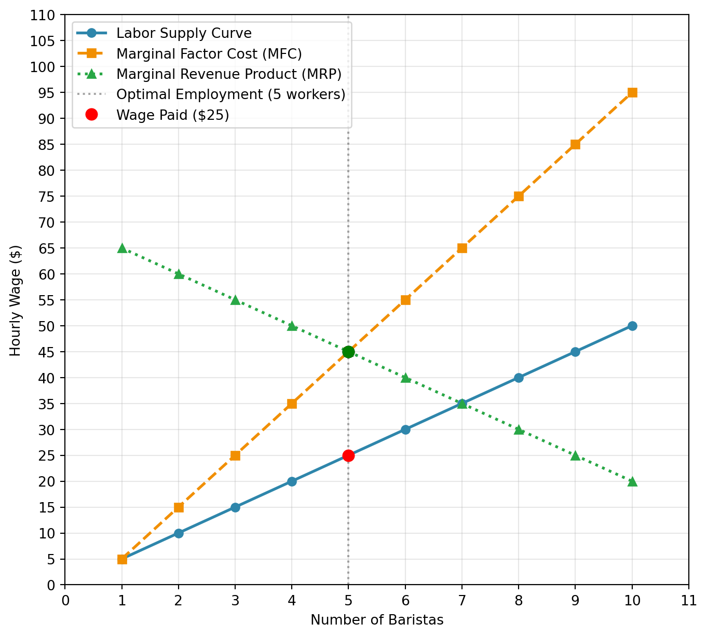
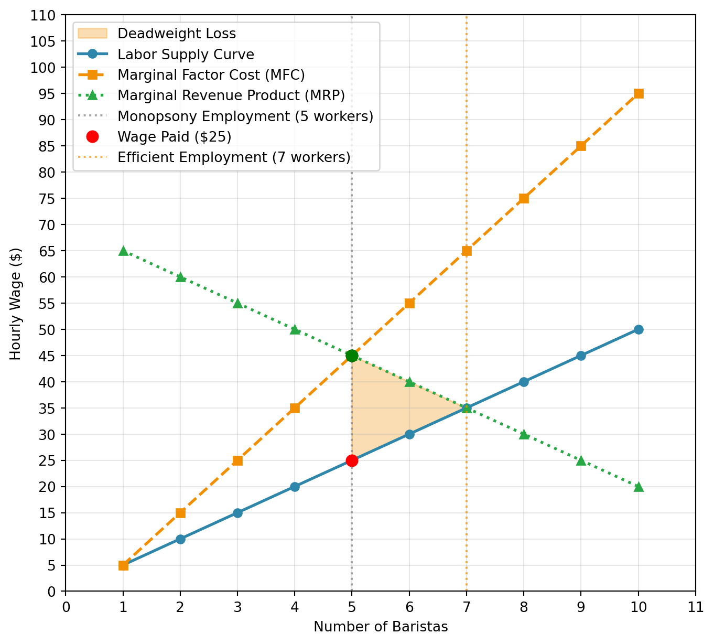
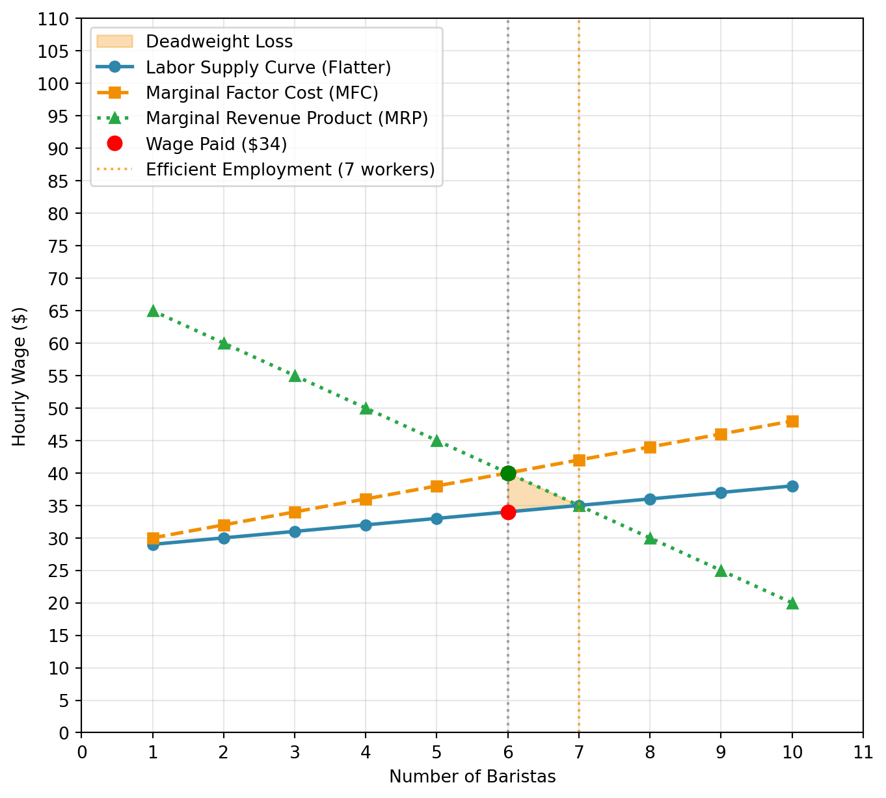
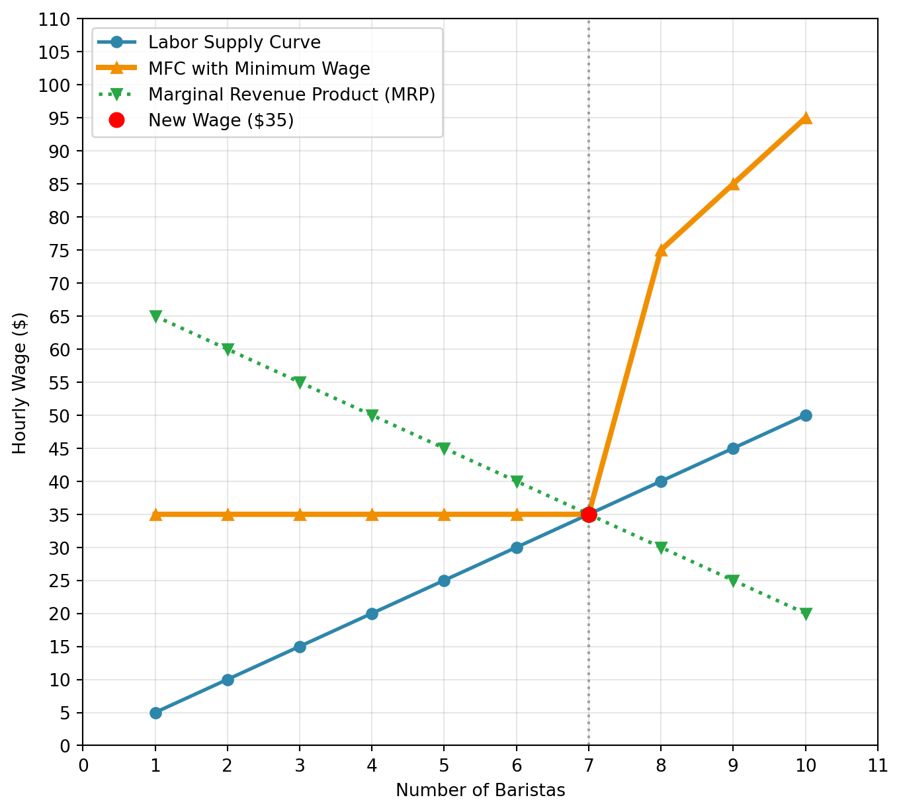
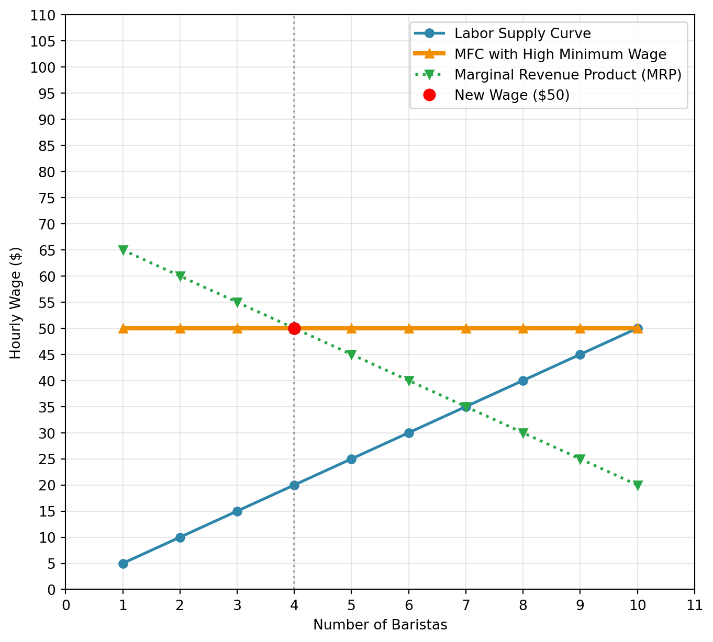

4 Monopsony: Theory
4.1 A Brief History
Adam Smith is often called the “father of economics”. In 1776 he published his magnum opus The Wealth of Nations. The goal of the book was to understand how nations build wealth. In it, he introduced a number of concepts that became extremely influential in modern economics. One of the most famous concepts is the “invisible hand”. If markets are free and unregulated, Smith argues that individual self-interest will lead to efficient outcomes. Even though there is not an overall planner of the economy, this invisible hand will guide the economy to an efficient outcome.
But Adam Smith recognized that there are settings in which these effcient outcomes won’t be realized. In particular, he writes the following about the labor market:
What are the common wages of labor, depends everywhere upon the contract usually made between [employers and employees], whose interests are by no means the same… The masters, being fewer in number, can combine much more easily … Masters are always and everywhere in a sort of tacit, but constant and uniform, combination, not to raise the wages of labor above their actual rate.
—Adam Smith, The Wealth of Nations
This aspect of the labor market, that employers may exercise market power over their workers, did not really receive much attention. The next big development came in 1933, when Joan Robinson published The Economics of Imperfect Competition. Robinson coined the term “monopsony” to describe a market with a single buyer. She used the term to describe the labor market, where employers are the buyers of labor. In Adam Smith’s quotation, he is arguing that employers have monopsony power, although the term did not yet exist at the time.
Again, after Joan Robinson’s work, studying monopsony power in labor markets did not really catch on. While it generated some initial interest, for much of the 20th century, the dominant paradigm in labor economics was a framework of perfect competition. Robinson herself said in 1969, “All this had no effect. Perfect competition, supply and demand…and marginal products still reign supreme in orthodox teaching.” (See Card (2022) for more discussion on Robinson’s work and its impact.)
After all, there are a lot employers. That’s really a core assumption of the competitive model. However, are you interested in working at every single firm? Is every firm interested in hiring you? Of course not. Assuming the number of firms is the size of the labor market for an individual is clearly not a good assumption.
To see another potential problem with the competitive model, consider the following scenario: a firm is going through a downturn in sales and decides that it can’t afford to offer a 3% raise to its employees as usual, and so offers no wage increase that year. Other firms in the area, however, are doing well and are offering 3% raises. Do you think the firm will lose all of its employees to other firms?
Probably not. Workers have some attachment to their current employer. They can’t costlessly quit their job and find a new one that pays better. But in perfectly competitive models, that is the assumption. There is a market wage. If you pay below that wage (i.e. don’t meet that 3% raise), you lose all your workers. For our textbook model in the next section, we will change this assumption.
4.2 Equilibrium in Monopsony
In perfect competition, we assumed firms are wage takers. This implies that if a firm decides to pay a wage below the market wage, it will immediately lose all of its workers. In this section, we will make a very simple change to this assumption. We will assume that the wage a firm offers depends on the amount of labor it wants to hire. In particular, we will assume that the higher the wage, the more workers a firm can attract. We will denote \(w(L)\) as the inverse labor supply curve. This function tells the firm that how much it needs to pay in order to attract a certain number of workers. For example, if a firm needs to pay a wage of $15 to attract 5 workers, then \(w(5) = 15\).
Now you might hear some arguments against monopsony power because it is assumed to be a monopsonist you need to be the only employer in the area. This is the classic “factory town” example, where there is literally only one employer in the town. But monopsony power is much more general than this. Monopsony power can exist even when there are many employers. The key distinction will be whether the firm faces an upward sloping labor supply curve. If a firm can hire as many workers as it wants at a fixed wage, then it is a wage taker and does not have monopsony power. If a firm has to raise the wage in order to attract more workers, then it has some monopsony power.
Let’s go back to the example we considered in the perfect competition section. Suppose we have a cafe hiring baristas. First, we are going to specify the labor supply curve to the cafe. We will assume that the labor supply curve is given in the following figure:
Now let’s consider the decision of the cafe owner of hiring the first worker. To hire one worker, the cafe needs to pay a wage of $5. Is this worth opening at all. To answer this question, we need to know the marginal revenue product of the worker. How much revenue is going to be brought in by the first worker? Let’s assume that the worker can make 13 lattes an hour, each of which sells for $5, implying the worker generates $65 in revenue per hour. The cost of hiring the worker is $5, so the cafe owner should definitely hire the first worker.
Now let’s consider the decision of hiring a second worker. To hire two workers the firm needs to pay a wage of $10. Is this worth it? Well, it depends again on the marginal revenue product of the second worker. Let’s assume that the second worker produces 12 lattes an hour, so $60 in revenue per hour.
Now, what do we compare the $60 in revenue to? One common pitfall is to compare it to the wage you are paying: $10. This is what we did in the perfectly competitive model. But this isn’t right anymore. What you need to compute is the additional cost of hiring the second worker. To hire the second worker, you need to pay that worker $10, but you also need to pay the first worker $5 more (from $5 to $10).
The increase in cost of hiring an additional worker is referred to the marginal factor cost (MFC). The MFC of the second worker is $15 ($10 + $5). The marginal revenue product of the second worker is $60, which is greater than the MFC of $15, so the cafe owner should hire the second worker.
What’s the marginal factor cost of the third worker? To hire the third worker, you need to pay that worker $15, but you also need to pay the first two workers $5 more than they were previously being paid (from $10 to $15). So the MFC of the third worker is $25 ($15 + $5 + $5). Now that we understand conceptually how to compute the MFC, let’s compute it for the entire range of the possible number of workers.

Now, to determine how many workers the cafe will hire, we need to find where the marginal revenue product of labor (MRPL) equals the marginal factor cost (MFC). Again, the MRPL is the additional revenue generated by hiring one more worker. We’ve already assumed the MRPL of the first worker is $65 and the second worker is $60 Let’s assume that the MRPL of each additional worker is given in the figure below.

When will a firm stop hiring workers? As soon as the marginal factor cost (MFC) of hiring an additional worker is greater than the marginal revenue product of labor (MRPL) of that worker. In our case, the firm will hire 5 workers. For the 6th worker, the marginal factor cost is $55. This is because the firm needs to pay $30 to attract this 6th worker, plus the increase in pay for all the previous workers (from $25 to $30). Therefore the total increase in costs of hiring the 6th worker is $30+$25=$55. The MRPL of the 6th worker is only $40, so from the firm’s perspective, it is not worth hiring the 6th worker. It will be losing money by hiring that worker.
So we have figured out equilibrium employment. But what about the equilibrium wage? Well, if the firm is hiring 5 workers, then it needs to pay a wage high enough to attract 5 workers. In our case, this is a wage of $25. So the equilibrium wage is $25 and the equilibrium employment is 5 workers. In our case that value comes directly from the inverse labor supply curve. To attract 5 workers, the firm needs to pay a wage of $25.
4.3 Inefficiency in Monopsony
Now that we’ve figured out the equilibrium employment and wage, let’s try and understand why monopsonistic markets are inefficient.
To do so, let’s consider the case of hiring the 6th worker. The 6th worker is willing to work for a wage of $30. This tells us that the 6th worker would prefer to work for $30 than not work at all. Let’s consider the value the 6th worker brings to the firm. The marginal revenue product of the 6th worker is $40. This means that the firm would gain $40 in revenue from hiring this worker.
So if we were to consider this in isolation, it seems like a good idea to hire the 6th worker. So why doesn’t the firm hire the 6th worker? Again, the firm takes into account that it can’t offer the 6th worker a wage of $30 without also raising the wages of the first 5 workers. The increase in wages of the first 5 workers is referred to as an inframarginal cost. An inframarginal worker is one that is already working at the previous wage. So increasing the wage does not attract this worker.
What is the size of the inefficiency? It depends on two things. First, how many workers are not being hired even though the marginal revenue product of labor is higher (or equal to) than the wage they are willing to work for. In our case, this is the 6th and 7th worker. It also depends on the gap between the marginal revenue product of labor and the wage they are willing to work for. In our case, the 6th worker is willing to work for $30 and has a MRPL of $40, so there is a large gap. For the 7th worker, the MRPL is equal to the wage ($35), so there is no inefficiency from not hiring this worker.
Often we allow fractional employment. For example, what if you could hire 5.1 workers. Well there would be a large inefficiency from not hiring this 0.1 worker because the MRPL at 5.1 is much higher than the wage of $25. This is often a background assumption in introductory economics courses. It allows us to calculate the inefficiency of monopsony more easily.
For example, in the figure below we have shaded in the inefficiency of monopsony. These are all the units in which the MRPL is greater than the wage, but are not being hired by the firm.

Now, let’s see how the inefficiency of monopsony changes when we change the labor supply curve. In particular, let’s see how the inefficiency changes when we make the labor supply flatter.

Notice that with the flatter labor supply curve, the deadweight loss area is much smaller compared to the steeper supply curve in the previous figure. Why does this make sense?
Well, let’s again think about the marginal factor cost. To go from 5 to 6 workers, you need to pay a slightly higher wage (about $33 to $35). But you also need to pay the first 5 workers a higher wage. But this inframarginal cost is not as large anymore. Instead of having to pay an additional $5 to each of the first 5 workers, you only need to pay an additional $2. The gap between the labor supply curve and the marginal factor cost curve is much smaller when the labor supply curve is flatter. This means that our employment levels and wages will be closer to the efficient levels.
Intuitively, what is going on here? Let’s take the firm’s perspective. In the extreme case of perfect competition, the firm can hire as many workers as it wants at a given wage. This means that the firm does not have to worry about inframarginal costs. There is no inframarginal cost because you don’t need to hire the wage to attract more workers. For a very flat labor supply curve, the inframarginal cost is small. You need to increase the wage a little bit to attract more workers, but you don’t need to increase it by much. The fact that inframarginal costs are small limits the inefficiencies of monopsony.
The key parameter here is the elasticity of labor supply. The elasticity of labor supply is a measure of how responsive the quantity of labor supplied is to changes in the wage. If the elasticity of labor supply is high, then small changes in the wage will lead to large changes in the quantity of labor supplied. What does this mean in terms of the slope of the labor supply curve? A high elasticity of labor supply means that the labor supply curve is flat. In contrast a low elasticity of labor supply means that the labor supply curve is steep.
In math, the elasticity of labor supply to the firm is defined as:
\[ \eta = \frac{\Delta L / L}{\Delta w / w} = \frac{\% \Delta L}{ \% \Delta w} \]
where \(L\) is the quantity of labor supplied, \(w\) is the wage, and \(\Delta\) indicates a change in the variable. This is a central parameter in the literature on monopsony in labor economics. Let’s again consider perfect competition. In a perfectly competitive market, if there is a tiny change in the wage, the firm either loses all its workers or gains all the workers in the market. In other words, a small change in the wage leads to an infinite change in the quantity of labor supplied to the firm. Therefore, under perfect competition, \(\eta = \infty\).
The smaller \(\eta\) is in magnitude, the more monopsony power the firm has. Why, because even if the firm decreases its wage substantially, it will not lose many workers. This will tells us the scope of monopsony power in the labor market.
4.4 Measuring Monopsony Power
In actual empirical studies of monopsony power, it is often difficult to estimate the entire supply curve to the firm. While we have plotted linear supply curves, they could be more general in practice. Identifying the entire supply curve is extremely difficult.
Instead, researchers often focus on a statistics that are informative about the degree of monopsony power. The statistic that has been most commonly estimated is the elasticity of labor supply to the firm. Again, a low elasticity of labor supply to the firm indicates that the firm has a lot of monopsony power, so it makes sense to focus on this statistic.
However, there are other potential statistics. Some researchers have focused on the gap between the marginal revenue product of labor and the wage. This is often referred to as the wage markdown. Mathematically, the wage markdown is often defined as: \[ \text{Wage Markdown} = \frac{MRPL-w}{MRPL} \]
So in our example, at the equilibrium, the MRPL is $45 and the wage is $25. Therefore, the wage markdown is (45-25)/45 = 0.444. This means that workers receive 44.4% of the marginal revenue product of labor.
I personally like this statistic because of its interpretability. The elasticity of labor supply to the firm is certainly useful, and in simple models, the elasticity of labor supply to the firm directly determines the wage markdown.
Wage markdowns, instead, have some intuitive appeal. If the wage markdown is going up over time, for example, then we can interpret this as workers receiving a smaller and smaller share of the marginal value they create. If the elasticity of labor supply to the firm is going down over time, then the scope for monopsony power is increasing. However, we really need the model to be correct. If our model is wrong, then it isn’t actually clear if workers are receiving a smaller share of the marginal value they create or not.
Lastly, other measures that have been used in the literature are things that are relatively easy to measure, but require perhaps more assumptions on how they translate to monopsony. Concentration indices, for example, are commonly used. The idea is that the scope for monopsony power is higher when there are fewer firms in the market. Therefore, if concentration is going up over time, then we might expect monopsony power to be increasing as well.
4.5 Sources of Monopsony Power
So far, we have assumed that the labor supply curve to the firm is upward sloping and that this leads to lower employment, lower wages, and inefficiency. But why is the labor supply curve upward sloping? What are the sources of monopsony power?
When you think about sources of monopsony power, you should think about why a worker may not leave his or her firm if the firm lowers the wage. That really is what is generating these upward sloping labor supply curves. So let’s consider a few that have been discussed in the literature.
4.5.1 Search Frictions
The assumption of perfect competition is that workers can effortlessly move between firms. They know what other firms in their area are paying and they can immediately start working at a new firm if they are offered a higher wage.
This is clearly not true in practice. Workers need to search for jobs. They need to apply for jobs and go through interviews. These search frictions are a source of monopsony power. The presence of search frictions became particularly influential in the 1980s with the work of Peter Diamond, Dale Mortensen, and Christopher Pissarides. Their goal was less about monopsony power and more about understanding aggregate unemployment dynamics. A consequence of their work, however, is that workers are paid less than their marginal revenue product of labor. Hence, there is monopsony power in the labor market.
Some search frictions occur naturally, like the job search process, while others are created by firms. For example, some firms require non-compete agreements. These agreements prevent workers from working for a competitor for a certain period of time after they leave the firm. This is a potential source of monopsony power because it again limits the ability of workers to move between firms.
4.5.2 Differentiated Jobs
Another source of monopsony power is job differentiation. So far, we have assumed that all jobs are the same and that workers prefer the job with the highest wage. But this is not true in practice. Some individuals may prefer a job because it is closer to their house. Some may particularly like the work environment or colleagues at a certain firm. All of these factors can lead to monopsony power. Why? Because these factors tie individuals to their jobs. They won’t move in response to a small change in the wage because they like their job for other reasons.
Differentiated products is a classic way to model imperfect competition in product markets. The same idea can be applied to labor markets. If jobs are differentiated, then firms have some monopsony power over their workers. This idea is clearly illustrated in Card et al. (2018).
4.5.3 Concentration
We started this chapter from a quote from Adam Smith. He argued that employers have monopsony power because they are few in number and can collude to keep wages low. This is another potential source of monopsony power.
Outright collusion is illegal in the United States, but we do have some evidence that it occurs in certain settings. For example, in 2010 the Department of Justice brought a case against many of the major firms in Silicon Valley, including Apple, Google, and Intel. The case alleged that these firms had agreed not to poach each other’s workers. In the end, the firms settled the case and agreed to pay hundreds of millions of dollars.
Even without explicit collusion, a small number of firms can lead to monopsony power. Oligopsony models are a workhorse set of models from industrial organization. In these models, there are a small number of firms that compete with each other. These markets lead to higher prices and lower output. Antitrust in the United States is explicitly concerned with markets getting too concentrated because of the belief that concentrated markets lead to higher prices and lower output.
4.6 Policy and Monopsony Power
Why does it matter whether we think the labor market is perfectly competitive or monopsonistic? One very good reason is that our policy decisions depend on the answer to this question. Even if politicians don’t necessarily say the words “perfect competition” or “monopsony”, they are implicitly making assumptions about the labor market when they make policy decisions.
For example, let’s return to the minimum wage. As we discussed in a previous chapter, the standard model of perfect competition predicts that a minimum wage will lead to unemployment. Increasing the cost of labor will lead to firms demanding less of it. Makes perfect sense.
But let’s see what happens in a monopsonistic labor market. Recall in our original cafe example in this chapter, the firm was hiring 5 workers at a wage of $25. The efficient level of employment was 7 workers at a wage of $35. What happens if we impose a minimum wage of $35?
The key in analyzing this is to consider the marginal factor cost curve. Let’s consider the marginal factor cost of the 6th worker. To hire the 7th worker, the firm needs to pay that worker $35 to attract the worker. In the previous setup, that would mean increasing the wage for the previous 6 workers by $5. But now the firm is already paying the $35 in order to meet the minimum wage. Therefore, the marginal factor cost of the 6th worker is $35. There are no inframarginal costs anymore. This is true for every single worker below the minimum wage. The marginal factor cost of every worker below the minimum wage is just equal to the minimum wage.
But once you get above the minimum wage, then you need to again consider inframarginal costs. For example, to hire the 8th worker you need to pay that worker $40, but you also need to pay the first 7 workers $5 more. Therefore, the marginal factor cost of the 8th worker is ($40 + $7*5) = $75. So the marginal factor cost curve with a minimum wage is flat at the minimum wage until you reach the number of workers that are willing to work at that wage. After that, the marginal factor cost curve is equal to the original marginal factor cost curve.

So what will the firm decide to do. It’s decision follows the exact same process. Keep hiring workers until the marginal factor cost of hiring an additional worker is greater than the marginal revenue product of that worker. In our case, the firm will hire 7 workers at a wage of $35, because that is where the marginal factor cost curve intersects the marginal revenue product curve.
This is a very surprising result! We’ve made a seemingly simple change to our model: firms face upward sloping labor supply curves. This change has led to a completely different prediction about the effects of a minimum wage. In this model, we can actually get that an increase in the minimum wage can increase employment. If you recall, that is exactly what the original Card and Krueger (1994) paper found.
However, we have to a bit careful here. Increases in the minimum wage can increase employment in monopsonistic models, but they don’t have to. Imagine the minimum wage in this market was set to $50. Let’s see what happens in this case.

Now the firm will hire only 4 workers at a wage of $50. This is fewer workers than both the original monopsony equilibrium (5 workers) and the efficient outcome (7 workers). When the minimum wage is set too high, it can actually reduce employment below even the monopsony level, demonstrating that there is an optimal range for minimum wage policy in monopsonistic markets.
4.7 Summary
Monopsony power in labor markets can stem from many sources. The consequence of monopsony power is that firms will pay lower wages and hire fewer workers than in a perfectly competitive market. Modelling labor markets as monopsonistic is important because it can lead to very different predictions about the effects of labor market policies.